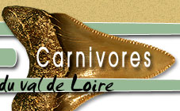
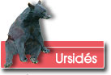
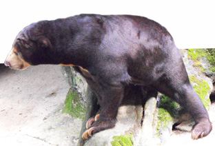

|
  |
||
 |
|
||
 Les premiers ursinés
Les premiers ours au miocène n’étaient pas d’imposants carnivores comme les ursinés actuels ou bien certains hemicyons (leurs cousins) du Miocène. Ils étaient de la taille d’un petit chien. Ballusia Hareni n’est présent qu’aux horizons MN 3 (-22 Ma). La dent trouvée (1) est donc une dent remaniée. La couronne de la molaire est pratiquement plate (par nature et non par l’usure!) La survivance de l'ours  A priori les ursinés ne sont pas très armés pour la compétition. Animaux plantigrades et massifs, les ours ne sont pas d’excellents coureurs de sprint ou bien d’endurance.Mais c’est dans la polyvalence qu’ils ont trouvé leur salut. Ils savent évoluer en plaine ou en montagne, nager, grimper dans les arbres grâce au développement musculaire de leurs pattes avant,… La dentition est elle aussi affaire de compromis. Les canines sont fortes et franchement adaptées à la prédation mais les incisives ne sont pas très spécialisées. La carnassière n’est pas tranchante et les dents arrière sont carrément mousses, ce qui permet un régime alimentaire varié avec la possibilité de broyer des plantes ou bien toutes sortes de mets. |
|||